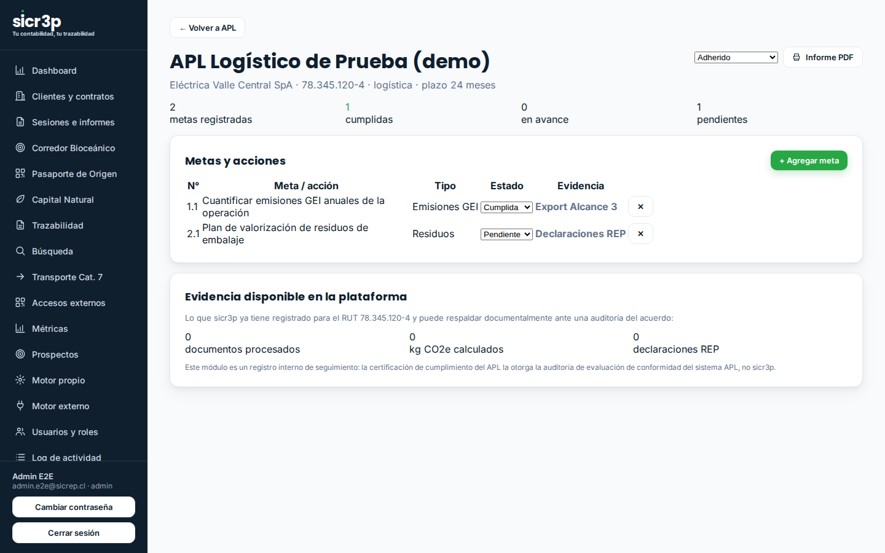

Si tu empresa adhirió (o va a adherir) a un Acuerdo de Producción Limpia, la auditoría final te va a pedir respaldo de cada meta. sicr3p lleva el registro de tus metas y las respalda con datos que ya existen en la plataforma: documentos reales, CO2e con factor citado, declaraciones REP y constancias de capacitación — todo verificable por QR.
Un Acuerdo de Producción Limpia es un convenio voluntario entre un sector empresarial (o empresas individuales) y órganos del Estado, con metas y acciones de producción sustentable que van más allá de lo que exige la ley. Está definido en el Artículo Noveno de la Ley N° 20.416 y lo coordina la Agencia de Sustentabilidad y Cambio Climático (ASCC), comité de CORFO. El marco técnico es la familia de normas chilenas NCh2796, NCh2797, NCh2807 y NCh2825 (vocabulario, especificaciones del acuerdo, seguimiento/evaluación de conformidad y requisitos de los auditores, respectivamente).
El APL chileno fue el primer instrumento de su tipo registrado como NAMA (Acción Nacional Apropiada de Mitigación) ante la CMNUCC, en octubre de 2012. La lista de acuerdos vigentes se consulta en ascc.cl.
Las metas típicas de un APL — eficiencia energética e hídrica, valorización de residuos, cuantificación de emisiones GEI, capacitación del personal — son exactamente el tipo de dato que una empresa suele tener disperso en planillas. Para dimensionar: la propuesta del segundo APL del clúster portuario de San Antonio contempla 7 metas y 56 acciones; el APL logístico-minero del Puerto de Antofagasta se certificó en 2019 con el 100% de cumplimiento de sus empresas.
La plataforma no reemplaza al auditor ni a la ASCC. Hace algo más simple y más útil: deja tu evidencia lista y trazable, meta por meta, para que la auditoría no sea una recolección de última hora.
| Meta típica del APL | Lo que sicr3p ya registra |
|---|---|
| Cuantificar emisiones GEI | CO2e calculado desde tus documentos tributarios reales, con el factor de emisión y su fuente citados en cada fila (motor determinista con versiones congeladas). |
| Gestión y valorización de residuos / envases | Declaraciones REP de envases y embalajes (Ley 20.920) registradas por sesión, con % de reciclabilidad calculado en el servidor. |
| Capacitación del personal | Cursos cortos del Instituto sicr3p con quiz servido por el servidor y constancia verificable por QR (las constancias no son certificaciones). |
| Reporte y transparencia | Informes PDF sellados en una cadena de hash pública: cualquiera puede verificar que el documento no cambió después de emitido. |
En el panel de administración registras a qué APL adhirió cada cliente, cargas sus metas y acciones, marcas el avance y asocias cada meta a la evidencia de la plataforma que la respalda. Un clic genera el informe de estado de avance en PDF.

El módulo APL: metas con estado y evidencia asociada, y el resumen de lo que la plataforma ya puede respaldar (datos de demostración).
| Es | No es |
|---|---|
| Registro ordenado de tus metas APL con evidencia trazable hasta el documento de origen. | Una certificación de cumplimiento: esa la otorga la auditoría de evaluación de conformidad del sistema APL (auditores registrados ante la ASCC). |
| Datos listos para mostrarle al auditor: agregados verificables documento a documento. | Una asesoría legal ni la negociación del acuerdo con la ASCC. |
| Apoyo para las metas de cuantificación GEI, residuos/REP y capacitación. | Cobertura automática de todas las metas: las de infraestructura u operación se registran, pero su evidencia es tuya. |
sicr3p SpA · Antofagasta, Chile
contacto@sicrep.cl · www.sicr3p.cl